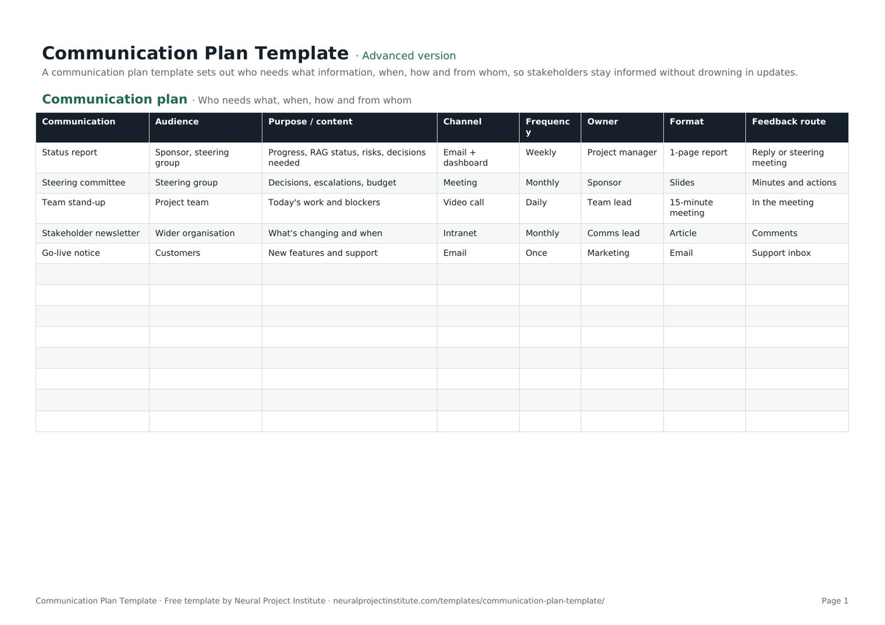

Free Communication Plan Template (Excel, Google Sheets, PDF)
This free communication plan template sets out who needs what information, why, through which channel, how often and from whom, so every stakeholder stays informed without being buried in updates. Download it in Google Sheets, Excel or PDF at beginner, advanced or expert level, with no sign-up, and overwrite the five sample rows with your own.

Key takeaways
- A communication plan is a matrix of every regular project communication: its audience, purpose, channel, frequency, owner, format and feedback route.
- Build it from your stakeholder register: start with what each group needs to know, not with the meetings you already hold.
- Every communication needs one named owner and a way for the audience to respond.
- Match detail and frequency to the audience: sponsors want decisions and risks, the team wants today's priorities and blockers.
- Review the plan at each phase gate and whenever stakeholders change, and drop updates that nobody reads.
Free download · no sign-up
Get the communication plan template
Pick your level and format: Google Sheets, Excel or a print-ready PDF. Spreadsheets include dropdowns, formulas and sample rows you can overwrite.
What is a communication plan?
A communication plan is a project document that sets out what information each stakeholder group receives, why they need it, through which channel, how often, in what format and who is responsible for sending it. It turns stakeholder needs into a predictable schedule of updates, meetings and announcements, so people get the right information at the right time.
PMI's PMBOK Guide calls the formal version a communications management plan and treats it as part of the wider project management plan. In practice most projects keep it as a single table, often called a communication matrix, which is exactly what this template gives you.
The project manager usually owns the plan, with input from the sponsor and, on larger or change-heavy projects, the communications team.
What is in this communication plan template
The template has one tab, Communication plan, with five sample communications that you replace with your own. Here is a live preview of the advanced version:
| Communication | Audience | Purpose / content | Channel | Frequency | Owner | Format | Feedback route |
|---|---|---|---|---|---|---|---|
| Status report | Sponsor, steering group | Progress, RAG status, risks, decisions needed | Email + dashboard | Weekly | Project manager | 1-page report | Reply or steering meeting |
| Steering committee | Steering group | Decisions, escalations, budget | Meeting | Monthly | Sponsor | Slides | Minutes and actions |
| Team stand-up | Project team | Today's work and blockers | Video call | Daily | Team lead | 15-minute meeting | In the meeting |
| Stakeholder newsletter | Wider organisation | What's changing and when | Intranet | Monthly | Comms lead | Article | Comments |
| Go-live notice | Customers | New features and support | Once | Marketing | Support inbox |
Sample rows are examples: replace them with your own.
- Communication plan: Communication, Audience, Purpose / content, Channel, Frequency, Owner, Format, Feedback route
The eight columns explained
- Communication: the name of the update, meeting or announcement, such as "Weekly status report" or "Go-live notice".
- Audience: the stakeholder group that receives it. Use the same group names as your stakeholder register.
- Purpose / content: why the communication exists and what it contains, for example progress, RAG status, risks and decisions needed.
- Channel: how it is delivered: meeting, email, dashboard, intranet, chat or video call.
- Frequency: a dropdown with Daily, Weekly, Fortnightly, Monthly, Quarterly, Once and As needed.
- Owner: the one person responsible for preparing and sending it.
- Format: the shape of the output, such as a one-page report, slides, a 15-minute meeting or an article.
- Feedback route: how the audience responds or asks questions: a reply, minutes and actions, comments or a support inbox. This column is what makes the plan two-way rather than broadcast only.
Beginner, advanced and expert versions
| Version | What you get | Best for |
|---|---|---|
| Beginner | One tab with five columns: Communication, Audience, Channel, Frequency and Owner, plus the Frequency dropdown | Small projects and quick internal plans |
| Advanced | All eight columns, including purpose, format and feedback route, with the Frequency dropdown | Most projects |
| Expert | The advanced plan plus an Instructions tab, a Dashboard that counts communications in total and by owner, and a Revision history tab | Projects with many stakeholders, or where a PMO reviews the plan |
Every spreadsheet version has a frozen header row and filters, so you can filter by audience or owner, or sort by frequency. The PDF is a print-ready copy for kick-off meetings and planning workshops.
What should a communication plan include?
The eight columns cover what most projects need. According to the PMBOK Guide (6th edition), a communications management plan can also record stakeholder communication requirements, the reason for distributing each item, the time frame and frequency, the person responsible, the methods and technologies used, the resources and budget for communication, an escalation process, a glossary of common terms, and any constraints such as legal or confidentiality rules.
Our advice is to keep the matrix itself lean and put anything that applies to the whole project in a short note above or below it:
| Element | Where it goes | Example |
|---|---|---|
| Who, what, when, how, by whom | The matrix rows | Weekly status report to the steering group by email, owned by the PM |
| Key messages | Purpose / content column, or a separate messages tab for change projects | "The new system goes live on 2 March; training starts in February" |
| Escalation path | Note under the matrix, or link to your governance document | Issues the PM cannot resolve within five days go to the sponsor |
| Approvals | Add an "Approver" column if external messages need sign-off | Customer emails approved by marketing before sending |
| Confidentiality | Note, or a column for sensitive items | Budget detail shared with the steering group only |
| Glossary and contacts | Separate tab if needed | Acronyms, distribution lists, meeting links |
Escalation routes and decision rights usually sit in your project governance arrangements; the communication plan simply points to them.
How to fill in the communication plan template
- List your stakeholders. Start from your stakeholder register or a quick stakeholder analysis. Group people who need the same information, such as sponsor, steering group, project team, wider organisation, customers and suppliers. Our guide to project stakeholder management explains how to identify and prioritise them.
- Write down what each group needs to know. Think in terms of decisions, actions and awareness: what must they decide, what must they do, and what should they simply know about?
- Create one row per communication. Name it in the Communication column and record its Audience and Purpose / content.
- Choose the channel, frequency and format that suit the audience and the message (see the table below). Use the Frequency dropdown so the plan stays consistent.
- Assign one owner for every row. A team or committee is not an owner; name a person.
- Agree a feedback route so the audience can ask questions, raise concerns or confirm decisions.
- Line it up with your schedule. Add one-off communications for milestones, go-live, cut-over and project closure, and check that regular meetings do not clash.
- Share the plan and review it with the sponsor and team, then revisit it at each phase gate.
Spreadsheet tips
- Filter by Owner to give each person their list of communications.
- Add columns your project needs, such as Approver, Start date or Confidentiality, but keep the core eight.
Choosing channels and frequency
PMI groups communication methods into three types: interactive (meetings, calls, workshops), push (emails, reports, memos sent to people) and pull (intranet pages, dashboards and shared folders people consult when they need to). Most plans use a mix: interactive for decisions and problem-solving, push for regular status, pull for reference information.
| Audience | What they usually need | Typical channel | Typical frequency |
|---|---|---|---|
| Sponsor | Progress against plan, top risks, decisions needed | One-to-one plus a short written report | Weekly or fortnightly |
| Steering group or board | Status, escalations, budget, approvals | Meeting with slides or a one-page report | Monthly, and at phase gates |
| Project team | Priorities, blockers, changes, dependencies | Stand-up or team meeting, chat | Daily or weekly |
| Wider organisation | What is changing, when and how it affects them | Intranet article, newsletter, town hall | Monthly, and before major changes |
| Customers or end users | New features, downtime, support | Email, in-app message, support pages | At milestones and go-live |
| Suppliers and partners | Requirements, dates, acceptance | Scheduled call, email, shared tracker | Weekly or as agreed in the contract |
The PMBOK Guide also gives a quick way to see why communication gets harder as projects grow: the number of potential communication channels is n(n-1)/2, where n is the number of people. Five people have 10 channels; ten people have 45. That is why a written plan matters more as the team and stakeholder list grow.
If your team works across locations or time zones, favour written, pull-based updates and record key meetings. Our guide to remote project management covers this in more depth.
Communication plan example
The five sample rows in the template show a typical mix for a mid-sized internal project, such as a new system rollout:
| Communication | Audience | Channel and frequency | Owner | Why it is set up this way |
|---|---|---|---|---|
| Status report | Sponsor, steering group | Email and dashboard, weekly | Project manager | A one-page report covering progress, RAG status, risks and decisions needed keeps leaders informed without a meeting |
| Steering committee | Steering group | Meeting, monthly | Sponsor | Decisions, escalations and budget need discussion; minutes and actions provide the feedback route |
| Team stand-up | Project team | Video call, daily | Team lead | A 15-minute meeting surfaces today's work and blockers fast |
| Stakeholder newsletter | Wider organisation | Intranet, monthly | Comms lead | An article explains what is changing and when; comments let people ask questions |
| Go-live notice | Customers | Email, once | Marketing | A single announcement of new features and support, with the support inbox for replies |
Notice that each row has a different owner, that frequency falls as the audience gets wider, and that every communication has a way to respond. For the weekly report itself, see our guide to the project status report, and run the steering meeting with a meeting agenda template.
Types of communication plans
The same matrix works for most kinds of communication plan; what changes is the audience list and the emphasis.
- Project communication plan: regular status, governance meetings and milestone announcements for one project. This is what the template is set up for.
- Change management communication plan: focuses on people affected by a change. Add audiences by team or location, and use the Purpose / content column for key messages at each stage: awareness, training, go-live and support. Our article on change management vs change control explains how the two fit together.
- Crisis communication plan: prepared in advance, with pre-approved holding statements, a strict approval route and contact details. Add Approver and Trigger columns.
- Marketing or launch communication plan: audiences are customer segments and channels are marketing channels. For scheduling individual posts and emails, a content calendar template is a better fit.
Tips and common mistakes
Tips
- Tailor detail to the audience. The same facts can be a one-line headline for the board and a full log for the team.
- Prefer fewer, regular updates over many ad hoc ones. Predictable timing builds trust.
- Pair the plan with a RACI matrix. The "Consulted" and "Informed" columns tell you who must appear in the communication plan.
- Check that people actually read the updates. Ask at the next steering meeting, or look at opens and views on dashboards and intranet pages.
Common mistakes
- Starting from meetings instead of needs. A list of existing meetings is not a plan; start from what each stakeholder needs to know.
- No owner, or a team as owner. Updates without a named person tend to stop.
- Broadcast only. Without a feedback route you hear about concerns too late.
- One size fits all. Executives rarely read the full team report; lead with decisions and top risks.
- Writing it once and forgetting it. Stakeholders change as the project moves through its phases.
- Forgetting the end of the project. Plan closure communications: handover, thanks and lessons learned.
Keeping the plan up to date
Treat the communication plan as a living document. Review it:
- at each phase gate or major milestone;
- when stakeholders join or leave, or the sponsor changes;
- after a communication problem, such as a decision made on out-of-date information;
- before go-live and project closure, when audiences and messages change most.
Record what changed in the expert version's revision history. Problems that come up through feedback routes belong in your issue log or RAID log template, and what you learn about communication is worth capturing in a lessons learned template.
For the broader process of planning, managing and monitoring communication, read our guide to project communication management.
Spreadsheet or project management software?
A spreadsheet plan is quick to build, easy to share and enough for most single projects. As the number of projects and stakeholders grows, many teams run recurring reports and reminders from a project management tool so updates are sent on schedule and dashboards refresh automatically. Wrike, our top-ranked tool, suits teams that need configurable dashboards and reports for several audiences.
Related templates and guides
Set the project's purpose and key stakeholders in a project charter template, capture meeting decisions with a meeting notes template, and plan the work itself in a project plan template.
 Project Charter TemplateFree project charter template covering purpose, objectives, scope, milestones, budget,…Beginner · Advanced · Expert
Project Charter TemplateFree project charter template covering purpose, objectives, scope, milestones, budget,…Beginner · Advanced · Expert RACI Matrix TemplateFree RACI matrix template to map who is Responsible, Accountable, Consulted and Informed…Beginner · Advanced · Expert
RACI Matrix TemplateFree RACI matrix template to map who is Responsible, Accountable, Consulted and Informed…Beginner · Advanced · Expert Meeting Agenda TemplateFree meeting agenda template with objective, timed items, owners, outcomes and…Beginner · Advanced · Expert
Meeting Agenda TemplateFree meeting agenda template with objective, timed items, owners, outcomes and…Beginner · Advanced · Expert Project Plan TemplateFree project plan template with goals, scope, deliverables, tasks, owners, dates and…Beginner · Advanced · Expert
Project Plan TemplateFree project plan template with goals, scope, deliverables, tasks, owners, dates and…Beginner · Advanced · Expert Work Breakdown Structure (WBS) TemplateFree work breakdown structure template with WBS codes, levels, deliverables, owners,…Beginner · Advanced · Expert
Work Breakdown Structure (WBS) TemplateFree work breakdown structure template with WBS codes, levels, deliverables, owners,…Beginner · Advanced · ExpertFrequently asked questions
What is a communication plan template?
A communication plan template is a ready-made table for setting out what information each stakeholder group receives, why, through which channel, how often, in what format, who sends it and how people give feedback.
Is this communication plan template free?
Yes. The communication plan template is free to download in Google Sheets, Excel and PDF, at beginner, advanced and expert level, with no sign-up.
What should a project communication plan include?
At minimum: the communication, audience, purpose or content, channel, frequency, owner, format and feedback route. Larger projects often add key messages, an escalation path, approvals and confidentiality rules.
How do I write a communication plan?
List your stakeholders, write down what each group needs to know, create one row per communication, choose channel, frequency and format, assign an owner, agree a feedback route, line it up with your schedule and review it at each phase. Our communication plan guide walks through it in detail.
Who is responsible for the communication plan?
The project manager usually owns and maintains the plan, with input from the sponsor and, on change-heavy projects, the communications team. Each communication in the plan has its own named owner.
When should you create a communication plan?
During project planning, once you have identified your stakeholders, and before regular reporting starts. Update it at each phase gate and whenever stakeholders change.
What is the difference between a communication plan and a communication strategy?
A communication strategy sets the overall approach: objectives, key messages and principles. A communication plan is the practical schedule of who receives what, when, how and from whom.
What is a communication matrix?
A communication matrix is a communication plan laid out as a table, with one row per communication and columns for audience, content, channel, frequency and owner. This template is a communication matrix.
How does a communication plan relate to a stakeholder register and RACI matrix?
The stakeholder register says who matters and why; a RACI matrix shows who is consulted and informed on each deliverable; the communication plan says how you will keep each of those people informed.
How often should a communication plan be updated?
Review it at least at each phase gate, when stakeholders join or leave, and after any communication problem. Short projects may only need one mid-point review.
Can I use this template for change management or internal communications?
Yes. Add the groups affected by the change as audiences and use the Purpose / content column for key messages at each stage. You can add columns such as Approver or Start date if you need them.
How many communication channels does a project have?
The PMBOK Guide gives the formula n(n-1)/2, where n is the number of people. A project with 10 people has 45 potential communication channels.
What is the difference between the beginner, advanced and expert communication plan template?
The beginner version has five essential columns on one tab. The advanced version has all eight columns, including purpose, format and feedback route. The expert version adds an Instructions tab, a dashboard that counts communications by owner and a revision history.